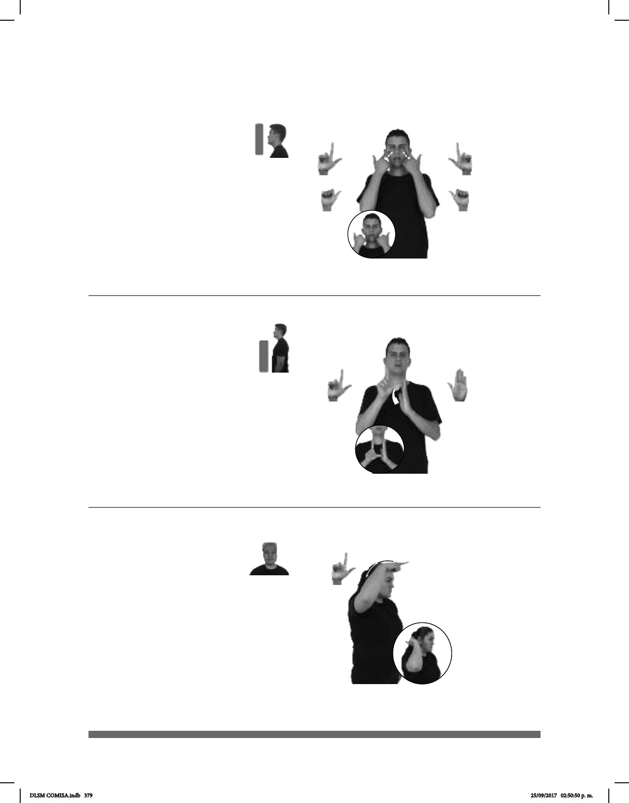

379
Seña: SS
Seña que pasa de L.1
a A.1
Palmas hacia adentro.
Las manos inician sobre los
ojos y se deslizan hacia las mejillas.
Recto mientras los
dedos índices cambian de posición, de
: Ojos semicerra-
dos, punta de la lengua hacia afuera,
boca semiabierta.
v. intr. Salir lágrimas de
los ojos generalmente por algún dolor,
por tristeza y a veces por una intensa
alegría.
Seña: SM
L.1
La palma inicia hacia abajo y
termina hacia arriba.
De la sien al cuello.
La mano se mueve formando
un arco hacia atrás.
1. sust. Persona que no tiene
juicio o que tiene algún daño, generalmente
alteraciones del juicio, la memoria, la
percepción o la capacidad de adaptación. 2.
adj. Que actúa de manera extraña, poco
común o poco razonable, que es excesivo o
que no tiene coherencia.
Seña: SB
MD L.1, MB B-P.2
MD palma hacia
afuera. MB palma hacia la derecha.
La MD inicia sobre los
dedos de MB y termina sobre su
palma. MB a la altura del pecho.
La MD simula un
salto.
sust. m. Lugar cerrado
por todas partes menos por la que
da al público.
(L-117)
pro-YO VER ESA MUJER TRISTE LLORAR
Veo a esa mujer triste, llora mucho.
___________________o.i.p.
DÓNDE pos-TUYO LOCAL
¿Dónde está tu local?
ESE HOMBRE LOCO PARECER
Ese hombre parece loco.
(L-116)
(L-115)
DLSM COMISA.indb 379 25/09/2017 02:50:50 p. m.